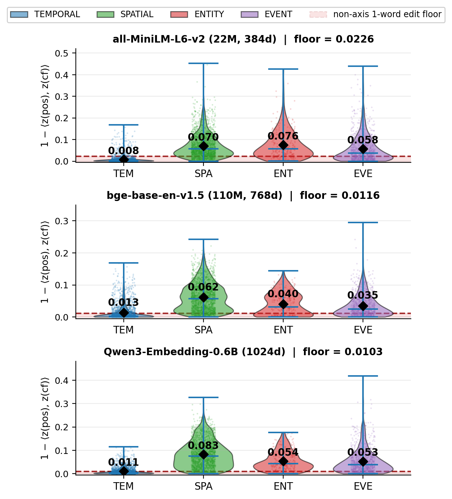
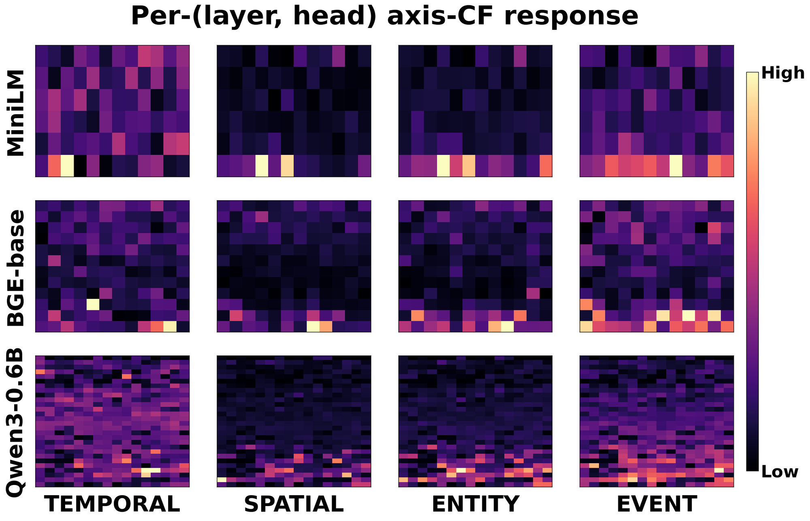

As LLMs are increasingly asked questions about a user's personal experiences, retrieval must distinguish memories by time, place, person, and event. Current personal-memory pipelines rely on frozen dense embedding models to embed memories for retrieval, but we find that these models do not capture the four axes well. Swapping a memory's date or place barely shifts its embedding, and a trained projection on top of the frozen embedding does not recover the missing signal. The problem lives inside the model, where each axis is encoded by a distinct attention-head pattern. Guided by these findings, we propose Axis-LoRA, a per-axis adapter that places four LoRA branches inside the embedding model and combines them via a per-query gate. Across three standard embedding models evaluated on LongMemEval, ATM-Bench, and LoCoMo, Axis-LoRA improves 4-benchmark mean R@10 by +1.28 to +1.56 pp while training only a small fraction of the base parameters on a small axis-counterfactual training set.
We describe a personal memory by four axes: TEMPORAL (dates, times), SPATIAL (places), ENTITY (people, objects), and EVENT (actions, event types). An axis counterfactual changes the value of one axis and keeps the rest of the memory verbatim, which isolates how much a model responds to that axis alone.
| ORIGINAL | [2023-11-22 19:00] Mom: Thanksgiving dinner went well. Everyone loved the turkey, and we played board games until midnight. |
| TEMPORAL | [2023-12-01 10:00] Mom: Thanksgiving dinner went well. Everyone loved the turkey, and we played board games until midnight. |
| SPATIAL | [2023-11-22 19:00] Mom: Thanksgiving dinner went well at the office. Everyone loved the turkey, and we played board games until midnight. |
| ENTITY | [2023-11-22 19:00] Dad: Thanksgiving dinner went well. Everyone loved the turkey, and we played board games until midnight. |
| EVENT | [2023-11-22 19:00] Mom: Thanksgiving lunch went well. Everyone loved the turkey, and we played board games until midnight. |
A training triplet from AxisCF: one memory and one counterfactual per axis, with the changed span underlined.
Across MiniLM-L6-v2, bge-base-en-v1.5, and Qwen3-Embedding-0.6B, swapping one axis moves a memory's embedding far less than the typical distance between two memories. TEMPORAL is the weakest axis. A date swap moves the embedding about as much as replacing one unrelated word, and SPATIAL, ENTITY, and EVENT clear that floor but stay small. A per-axis projection trained on the frozen output recovers part of the TEMPORAL signal, but retrieval by date stays far from useful.

Cosine distance between a memory and its axis counterfactual. The dashed line is the distance caused by swapping one non-axis word.
Measuring how much each attention head's output changes under a one-token axis edit shows a different head pattern for each axis, concentrated in the later layers. This points to adapting the model internally, one branch per axis, rather than post-processing its output.

Per-(layer, head) response to single-token axis edits. Rows within a panel are layers (input at top), columns are heads.
The embedding model stays frozen. Axis-LoRA adds a gated per-axis term to its similarity score:
zb is the frozen embedding, φA the embedding through the LoRA branch of axis A, wA(q) the gate weight, and α = 0.25.
Four axis branches
One LoRA adapter per axis (rank 16) on the query and value projections of the last 20% of attention layers. The branches share no parameters, so each axis learns its own direction.
Per-query gate
An MLP on the frozen query embedding, followed by sparsemax, gives exact zeros to axes the query does not need. The gate temperature anneals from 2.0 to 0.5 during training.
Training
InfoNCE on AxisCF, where each memory's own counterfactuals are hard negatives, plus a distillation anchor that keeps every branch close to the base model on MS MARCO passages.
R@10 of the frozen embedding model and Axis-LoRA (mean of 4 seeds). Small numbers are the change over the frozen model in percentage points.
| Embedding model | Method | LongMemEval | ATM-Bench Normal | ATM-Bench Hard | LoCoMo | 4-bench Mean |
|---|---|---|---|---|---|---|
| MiniLM-L6-v2 | Frozen | 0.4741 | 0.6465 | 0.2806 | 0.4422 | 0.4608 |
| Axis-LoRA | 0.4872+1.31 | 0.6571+1.06 | 0.3051+2.45 | 0.4564+1.42 | 0.4765+1.56 | |
| bge-base-en-v1.5 | Frozen | 0.6099 | 0.7286 | 0.2911 | 0.6244 | 0.5635 |
| Axis-LoRA | 0.6397+2.98 | 0.7368+0.82 | 0.3148+2.37 | 0.6178−0.66 | 0.5773+1.38 | |
| Qwen3-Embedding-0.6B | Frozen | 0.7174 | 0.7544 | 0.2994 | 0.5856 | 0.5892 |
| Axis-LoRA | 0.7238+0.64 | 0.7420−1.24 | 0.3370+3.75 | 0.6053+1.97 | 0.6020+1.28 |
Axis-LoRA raises the 4-benchmark mean on all three embedding models while training at most 0.6% of the base parameters on 4,196 AxisCF triplets. ATM-Bench Hard improves on all three models (+2.37 to +3.75 pp).
| MiniLM-L6-v2 | bge-base-en-v1.5 | Qwen3-Embedding-0.6B | ATM-Bench Hard (3 models pooled) | |
|---|---|---|---|---|
| Gain (pp) | +1.56 | +1.38 | +1.28 | +2.86 |
| 95% CI | [+0.54, +2.70] | [+0.25, +2.39] | [+0.15, +2.52] | [+0.55, +5.36] |
Gain in 4-benchmark mean R@10, with query-level bootstrap 95% CIs (20k resamples). ATM-Bench Hard has 31 queries, so its gain is tested pooled over the three embedding models.
@inproceedings{kim2026axislora,
title = {Axis-{LoRA}: Probing and Adapting Embedding Models for Personal-Memory Retrieval},
author = {Kim, Dohoon and Park, Junho and Bae, Hyunwoong and Kim, Seyoon and Moon, Taesup},
booktitle = {Proceedings of the 2026 Conference on Empirical Methods in Natural Language Processing},
year = {2026}
}